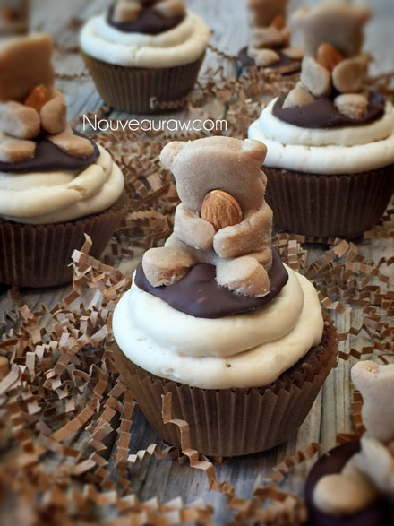

Cuddly Brown Bear Cupcakes with Orange Blossom Frosting

~ raw, vegan, gluten-free ~
Impress yourself and everyone else with these raw, 3-D vegan, gluten-free cupcakes that are nothing but scrumptious and ADORABLE. I even witnessed grown men swooning over them… I won’t give up any names; they know who they are. :)
The Orange Blossom frosting really steals the show when it comes to taste… the light, citrus brightness that it gives to the overall dessert is just mouth-wateringly (wateringly, my new word for the day) delicious. It compliments the richness of the chocolate cake perfectly. I suggest making the frosting first, so it has time to thicken up. I prefer to make it the night before so it can do its magic while I am sleeping.
Behind every great taste that I add to a recipe, I look for a nutritional reason to use it as well. Orange essential oil is a powerful cleanser and purifying agent. It helps to protect against seasonal and environmental threats. Provides antioxidants, which are essential to overall health and is uplifting to the mind and body.
Seems like a good reason to use it if you ask me. Granted, we are not using a therapeutic amount, but every little bit counts. If you can’t get your paws on an orange essential oil, you can use orange flavoring; you just won’t get the health benefit as you would from the pure oil.
The brownie has a deep chocolate flavor that isn’t too over-the-top-thank-you-very-much-I-now-have-a-belly-ache! (you know what I am talking about) And I actually thought that using 1/3 cup of batter per cupcake would leave a person with a brick in their belly, but it didn’t… well assume it didn’t only because everyone polished them off in no time… licking their fingers all the way.
This recipe will make 20 bears and ten cupcakes. Feel free to double the cupcake batter if you want to make 20 cupcakes. You might have to do this in batches, depending on your food processor size. I hope you enjoy this creation that I have shared with you. Please leave a comment below. Blessings, amie sue
 Ingredients:
Ingredients:
Orange Blossom Frosting: yields 2 1/2 cups
- 1 cups cashews, soaked 2+ hours
- 7 oz thick coconut milk, fresh or canned
- 1/4 cup maple syrup
- 1 Tbsp vanilla extract
- 6 drops orange essential oil
- 1/8 tsp Himalayan pink salt
- 1/2 cup cold-pressed coconut oil, melted
- 1 Tbsp powdered lecithin, sunflower based
Bears: yields 20 bears
- 2 cups fine almond flour, raw or purchased
- 6 Tbsp maple syrup or agave
- 1 tsp vanilla or maple extract
- 1 tsp ground Ceylon cinnamon
- 20 whole almonds
- Hardening chocolate (optional) raw or purchased
Cupcakes: yields 10 (1/3 cup per cupcake)
Preparation:
Frosting:
- Place the cashews in a glass bowl, along with 4 cups of water.
- Soak for at least 2 hours. Read more about why (here).
- The soaking process will help reduce phytic acid, which will aid in digestion.
- The soaking also softens the cashews, so they blend nice and creamy.
- After the cashews are through soaking, drain and rinse.
- Substitution: if you can’t eat cashews, you can use 2 packed cups of young Thai coconut meat.
- In a high-speed blender combine in order; coconut milk, maple syrup, vanilla, salt, and cashews.
- By placing the liquids in first, it helps the blades spin more easily.
- Blend until creamy and don’t feel any grit in the frosting. Depending on the blender, this may take anywhere from 1-5 minutes.
- You can use raw agave nectar instead of maple syrup if needed.
- While the blender is running and a vortex is in motion, add in the lecithin, then drizzle in the coconut oil. Make sure that it gets well incorporated.
- I don’t recommend leaving the lecithin out.
- Place the frosting in an airtight container and place in the fridge for 6+ hours to firm.
- This will keep for 3-5 days.
- See below for piping instructions.
Bears:
- In the food processor, fitted with the “S” blade, combine the almond flour, sweetener, vanilla, and cinnamon. Process until the batter is smooth and starts to gather in a ball form as the blades spin.
- You must use a fine almond flour for this recipe. Do not use ground almonds. To make your own raw version; I recommend using pure white almond pulp that has been dehydrated and ground to flour.
- I haven’t tested other flours such as; buckwheat or oat. You can experiment if you want.
- Gather the dough and shape it into a ball.
- Lay a piece of parchment paper on the countertop and place the dough ball in the center. Lay another sheet of parchment paper on top. Roll out to about 1/4 inch thick. Thicker dough creates chubby bears which have more character than thin doughed ones.
- Dip the cookie cutter into almond flour, then press into the dough.
- Click (here) to get more information and to see pictures of creating the bears.
- This dough is sticky and takes a little patience in getting it out of the cookie cutter. I used the end of an ink pen to push the paws out.
- It will look a little rough once out, flip the cookie over and use the other side which should be plump and flawless.
- Place an almond on the chest area and gather the arms around it, lightly pressing them together as though the bear is holding the almond.
- Lift the bear into your hand and fold the bear into a sitting position. Don’t be afraid to have some of them leaning to the side, more forward, etc. It gives them character.
- After preparing the hardening chocolate, place a teaspoonful’s worth on the parchment paper and set the bear in the center of it, pressing down lightly, so some of the chocolate squishes up around the bear, giving the appearance of sitting in a mud puddle. Set aside or in the fridge for the chocolate to harden.

Cupcakes:
- If the dates are dry and tough, in a small bowl, rehydrate by adding enough hot water to cover them. Soak for 10+ minutes, or until soft. Once done soaking, discard the soak water and hand-squeeze the excess water from them. Set aside.
- In a food processor, fitted with the “S” blade, process the almonds until they are a small mealy size.
- They won’t break down into a fine powder, due to their natural oils.
- Be careful not to over-process; this will lead to the almonds releasing too much of their natural oils, and this will make the cupcakes oily feeling.
- You can use any other nut in place of the almonds.
- Add the dates, cacao, mesquite powder, oil, salt, and process until the batter starts to form a ball.
- Line a muffin tin with 2 cupcake liners. I found two was better than one due to the natural oils in the nuts. Foil liners are stronger.
- Drop 1/3 cup of batter into each muffin cavity and flatten them down. The dough should reach the brim of the cavity. Repeat till the batter is gone. Set aside.
Assembly:
- Remove the cupcakes from the muffin tin before frosting them… trust me on this. :)
- Fit a piping bag with any tip that you prefer, fill the bag with frosting, and work out any air bubbles before you start.
- Tip: the frosting will be very firm once it has sat in the fridge. Scoop it out and place it in the piping bag, then let it rest on the counter until it squeezes out of the piping tip with pressure.
- Once the frosting is piped on, place a bear on top and press down gently. You are done!
- Store in the fridge for 3-5 days, covered with plastic wrap.
- This frosting holds up pretty good at room temp. At 70 degrees (F) it stayed in perfect shape for over 4 hours.
The Institute of Culinary Ingredients™
- To learn more about maple syrup by clicking (here).
- What is raw cacao powder?
- Why do I specify Ceylon cinnamon? Click (here) to learn why.
- What is Himalayan pink salt and does it really matter? Click (here) to read more about it.
- Is coconut butter the same as coconut oil? Click (here) to find out.
Have you hugged an almond today?
© AmieSue.com